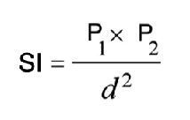

3. Introduction to the Python Language
Python is an open-source programming language that can be used for a wide variety of programming tasks, from basic scripts to complex and intricate applications.
Python is an interpreted language. This means that the program code is compiled into machine readable code at the moment it is run by the interpreter. This is in contrast to a compiled language like C++, or Java where the program code is compiled into machine readable code by a language compiler before the code is run. The compiler creates an executable in the machine’s native language that can then be run many times.
Python is also a dynamically typed language. This means that developers do not have to declare variables prior to using them. Python is also an object oriented language. The default installation is a set of core modules, but hundreds of libraries, e.g., SciPy, Numpy, Arcpy, etc., are available for specialized tasks.
3.1. Basic Aspects of Python
In this module, we will look at the following aspects of the Python language:
Hello World program
Variables
Data Types
Comments
Basic Python Statements
Simple programs
Hello World Program
Enter the program below in Jupyter Notebook or any other Python development that you are working in and then run the code. You will have to look up how to run the code in the development environment in which you are working. Do not enter “>>>”. That symbol is to indicate the compiler’s prompt if there is one.
>>> print('Hello, world!')
Variables
In programming, a variable is a piece of information stored in the computer’s memory. One can think of it as a container for storing values used in a program. Values are assigned to variables using the assignment operator “=“, as shown below. Please note that variable names are case sensitive. A variable with the name “my_age” is not the same variable as “My_Age”.
>>> my_age = 29
To initialize a variable in Python, we create a name for the variable and then assign it a value in one statement. The values stored in variables may change during the course of program execution.
Although a variable need not be assigned to any particular data type, if you want to specify the data type of a variable, this can be done with casting. For example:
1x = str(10) # x will be '10'
2y = int(55) # y will be 55
3z = float(3.8) # z will be 3.8
Data Types
Python has several data types. The list below comes from W3Schools.
Numeric Types: int, float, complex
Sequence Types: list, tuple, range
Mapping Type: dict
Boolean Type: bool
Set Types: set, frozenset
Binary Types: bytes, bytearray, memoryview
None Type: NoneType
Integers
Integers are whole numbers, i.e., numbers without decimals, e.g, 23, 123, 4567, etc
Integers are assigned to variables using the “=” sign.
>>> a = 10 # Normal assignment
Convert a number to integer
>>> int(3.45) 3
Floats
Floats are numbers that include decimals
To make sure a variable becomes a float, use a decimal somewhere in the declaration/calculations, e.g.,
>>> pi = 3.1415927 >>> f = 5.0 # declare float
To convert a number to a float, use the float function, e.g.,
>>> float(3) 3.0
Dictionaries
A dictionary is a data structure used to store groups of objects whose values occur in pairs. For example, one may have a list of students for which their grades need to recorded. We can use a set of key value to do this:
1grades = {'Robert' : 75,
2'Dawn' :90,
3'James' : 85,
4'Benjamn': 77,
5'Ingrid' :87,
6'Lester': 82}
In the example above, the names of the students is called the key while the test scores are the values. A dictionary allows many operations to be performed on the key value pairs. For example, new key values pairs can be inserted into the dictionary while existing ones can be deleted.
Comments
Comments are plain descriptions of what your code is doing. Comments make it easy for you to debug, maintain and update your code. In Python, single line comments start with ‘#’ while multiple line lines are enclosed in triple quotes.
Single Line Comments
In the example below, the program uses two single line comments to remind the programmer what the line that follows is all about.
1#Get the user's input 2P1 = input("Please input the size of the first city: ") 3 4#Calculate the interaction between places 5PI= (int(P1)*int(P2))/(float(Distance)*float(Distance))
Multiple Line Comments
The example below shows how multiple line comments are written. Either single quotes or double quotes can be used, but they can’t be mixed.
1''' I'm very long-winded and I really need to take up more than one line.
2That way I can say all the very important' things which I must tell you.
3Strings like me are useful when you must print a long set of instructions, etc.'''
4
5P1 = input("Please input the size of the first city: ")
6PI= (int(P1)*int(P2))/(float(Distance)*float(Distance))
Program Statements
In programming, a statement is a line of code that expresses some action to be carried out. A program is a sequence of statements directed at solving a problem. The program in the example below consists of four statements aimed at converting kilometers into miles.
1kilometer = float (input ("Please enter the kilometer to covert _ "))
2conversion_ratio = 0.621371
3miles = kilometer * conversion_ratio
4print ("The converted value is:", miles)
3.2. Practice Programs
The scripts below are intended to show how to use Python statements to create programs. The programs are all sequential meaning that each line in the program is run after the preceding line. There is no testing of conditions or repeating of operations.
The first six examples do not require any specialized Python packages. They can all be run using Python’s standard library. If you do not have a Python’ interpreter already installed, you can can use the interpreter at this website
For Examples 7 through 10, the arcpy package must be loaded into memory using the import statement. If arcpy is not installed, the scripts will return an error.
1. Write a program to calculate the average of three scores. Key functions in the program below are the input function, the float function, and the round function.
# Get the three scores
num1 = float(input("Enter the first number: "))
num2 = float(input("Enter the second number: "))
num3 = float(input("Enter the third number: "))
# Calculate the average
average = (num1 + num2 + num3) / 3
# Print out the test score
print ("the average score is: ", round(average,2))
2. Write a program that converts the temperature in Fahrenheit to Celsius
Please note the formatting of the results in the print statement. The function, str(round(Celsius,2)), converts formats the results to two decimal places then converts the value to a string. The plus sign concatenates or joins the first string with the second second string.
1Fahrenheit = float(input("Enter the temperature in Fahrenheit: "))
2Celsius = (Fahrenheit - 32) * 5.0/9.0
3print (str(round(Celsius,2)) + " degrees Celsius")
3. Write a program to calculate the square root of a number
In the code below, %0.2f and %0.4f’ are formatted place holders for two variables. The variables appear at the end of the string in the form of a tuple preceded by a % sign.
1num = float(input('Enter a number: '))
2num_sqrt = num ** 0.5
3print ('The square root of', num, 'is', num_sqrt)
4. Write a program to calculate the area of a triangle.
1# Get inputs from the user
2base = float(input('Enter length of the base of the triangle: '))
3height = float(input('Enter the height of the triangle '))
4
5# calculate the area of the triangle
6triangle_area = (base * height) / 2
7
8# Display the results
9print ('The area of the triangle is', triangle_area)
5. Write a program to calculate the area of a circle.
The script below illustrates how to import a library (math) and use a function from the math library. Note that the dot notation is used to show that the pi function is related to the math library.
1#import the math library that contains math functions
2import math
3
4
5# Get inputs from the user
6radius = float(input("Enter the radius of the circle: "))
7
8
9# Perform calculation
10circle_area = math.pi * radius ** 2
11
12# Display the results
13print('The area of the circle is', circle_area)
14
15
16#format results
17print('The area of the circle is', round(circle_area,2))
6. Write a program to calculate the mean of a set of numbers.
This code uses the mean() function within a module named numpy module to calculate the mean. The function takes a list of numbers as an imput.
1 import numpy
2
3 arr_mean = numpy.mean([31,35,46,59,71,80,84,82,75,62,48,36])
4
5 print("The arithmetic mean is :", arr_mean)
7. Write a program that reads a simple text file with one entry per line. Once the list is read and parsed, use it to calculate the mean.
1 import numpy as np
2 data = np.loadtxt("/Users/hsemple/Desktop/equqke_depth.csv", skiprows=1, dtype='float')
3
4 print (data)
5
6 arr_mean = numpy.mean([data])
7 print("The arithmetic mean is :", round(arr_mean,4))
8. Write a program that calculates the spatial interaction between two places using a simple form of the gravity model.
 1#Get the user's input
2P1 = input("Please input the size of the first city: ")
3P2 = input("Please input the size of the second city: ")
4Distance = input("Please input the distance between the two cities: ")
5
6# Calculate the interaction ,with output of decimal format
7PI = (int(P1)*int(P2))/(float(Distance)*float(Distance))
8
9#Print the result
10print (”The potential interaction between the two cities is", round(PI,2) )
11
12#End of the program
13print ("Thanks for using this program...")
14print ('The area of the triangle is', triangle_area)
Maximum Minimum Standard Deviation Variance
7. Write a Python program to display the calendar for any given month of a specified year.
The script below illustrates how to import the calendar library and use a function from the calendar library. Enter month and year as integers.
1#import calendar library
2import calendar
3
4# Get the month and year from the user
5yy = int(input("Enter year: "))
6mm = int(input("Enter month: "))
7
8# display the calendar
9print(calendar.month(yy, mm))
8. Write a program to create a time stamp**
1#Note the use of concatenation, i.e., the use of the plus sign to join strings to create a single string.
2
3from datetime import datetime
4now = datetime.now()
5mm = str(now.month)
6dd = str(now.day)
7yyyy = str(now.year)
8hour = str(now.hour)
9mi = str(now.minute)
10ss = str(now.second)
11
12print (mm + "/" + dd + "/" + yyyy + " " + hour + ":" + mi + ":" + ss)
3.3. Exercises
1. Geographers use gravity model to estimate the amount of spatial interaction between two or more places. Write a program that calculates the spatial interaction between two places using a simple form of the gravity model shown in the formula below. In the formula, P1 and P2 are the population of the two places while d is the distance between the places.*
2. Write a program that interpolates a single point value using the IDW method
As shown in the illustration below, we are trying to estimate a value for the unknown point (?) based on the nearest four surrounding values. Instead of calculating a simple average, we are weighting each z-value by the inverse of the distance between the location of the z-value and the location of the point whose z-value is being calculated.

The formula to estimate spatial interpolation is given below. In terms of program flow, your program should prompt the user for the z-value for each of the known points, zi. (Tip: repeat the input statement z-values four times). Next, it should prompt the user for the distance of each of the z-value to the point that is being calculated (Tip: repeat the input statement for distance values four times). Once all the z-values and distances are collected, the program should use these values along with the formula below to compute the z-value at the unknown location. Demonstrate that your program works using the data in the above diagram.

3. Write a Python program that calculates population growth using the formula below.
The programm will first prompt the user for a current population as an integer, a specific growth rate as a floating point number, and the number of years for which growth is to be calculated as an integer. For each successive year, the program will output an estimate for the size of the new population to within an accuracy of two decimal places (it is not necessary to print trailing zeros, and you can use the round() function). Finally, the program should print out the total growth in population.

4. Run the program below that plots average monthly temperature values for Ann Arbor for 2022. The programs depends on a library called matplotlib to do the graphing. If matplotlib is not installed on your computer the program will fail. Therefore, you must first install matplotlib for the program to work. Matplotlib is installed with Jupyter Notebook, therefore, one option is run this program within Jupyter Notebook.
1import matplotlib.pyplot as plt
2
3
4x = ['Jan', 'Feb', 'Mar', 'Apr', 'May', 'Jun', 'Jul', 'Aug', 'Sep', 'Oct', 'Nov', 'Dec']
5y = [31,35,46,59,71,80,84,82,75,62,48,36]
6plt.plot(x,y)
7plt.ylabel('Average Monthly Temperature (°F), Ann Arbor, MI')
8plt.show()
5. Write a program that reads a simple text file with one entry per line. Once the list is read and parsed, use it to calculate the following” maximum value, minimum value, standard deviation, variance.
6. Buffer a line using Jupyter Notebook
The program below depends on an ESRI library called arcpy. It is the arcpy library that supplies the additional capability that Python needs to execute ArcGIS commands. The code is intentended to run as a standalone script or from Jupyter Notebook within ArcGIS Pro. Copy the script and paste it into Jupyter Notebook within ArcGIS Pro and run it.
1import arcpy
2arcpy.env.overwriteOutput = True
3arcpy.env.workspace = "C:/data"
4
5# Get the input parameters for the Buffer tool
6infile = "cities.shp"
7outfile = "buffered_cities.shp"
8bufferDistance = 100
9
10# Run the Buffer tool
11arcpy.Buffer_analysis(infile, outfile, bufferDistance)
12
13
14# Report any error messages that the Buffer tool might have generated
15arcpy.AddMessage(arcpy.GetMessages())
7. Buffer a line using the Python Window in ArcGIS Pro
The code below is written for the arcpy environment and is intentended to be run in ArcGIS Pro Python Window. Copy the script and paste it into the Python Window.
1import arcpy
2arcpy.env.workspace = "C:/data"
3arcpy.Buffer_analysis("roads", "C:/output/major_roadsBuffered", "100 Feet", "FULL", "ROUND", "LIST", "Distance")
Deliverables
Submit the source code of your programs as well as screenshots showing that the programs successfully ran in Python.
Readings
Please vist the websites below to learn about the Python concepts listed above.